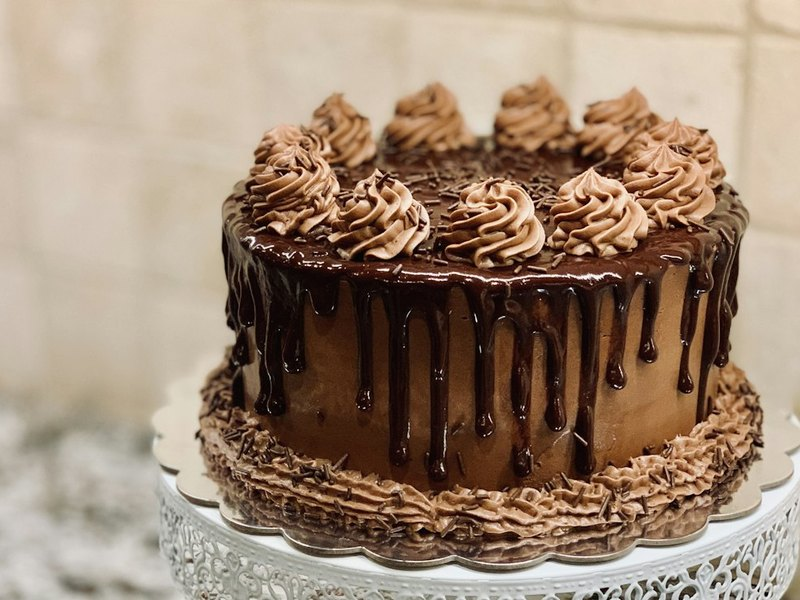

Точність — це не педантизм. Це спосіб працювати спокійно.
ГРАМ — невелика студія технологічних карток для кондитерів. Ми беремо рецептури, які вже працюють на кухні, і перетворюємо їх на документи, за якими може працювати інша людина.

Навіщо це
Кондитерська часто тримається на одній людині. Поки вона на кухні — все добре. Коли з’являється новий співробітник, починаються «як ти це робив?» і повторне винайдення рецепта.
Технологічна карта прибирає цю залежність. У ній є грамування, температура, час, вихід, собівартість і критерії готовності. Не тому, що кондитер не вміє — а тому, що кухня має працювати однаково в понеділок і в суботу.
Ми не продаємо «секрети». Ми продаємо робочі документи, які можна роздрукувати, покласти біля робочого місця й використовувати щодня.
«Хороша техкарта не робить кондитера кращим. Вона робить результат передбачуваним — а це вже половина спокою».Ірина Мельник, кондитер-технолог, засновниця ГРАМ
Принципи
Чесна ціна. Один набір — 449 ₴. Без таймерів, «знижок 90%» і тиску. Ви платите за конкретний документ, а не за обіцянку.
Структура замість хаосу. Усі картки мають однакові розділи: рецептура, технологія, вихід, собівартість, зберігання, алергени.
Практика замість теорії. Кожен набір перевірений на кухні. Ми не публікуємо рецепт, поки не розуміємо, як він поводиться на вітрині та після охолодження.
Повага до покупця. Безпечна оплата, доступ у кабінеті, безкоштовні оновлення й зрозуміла підтримка. Якщо файл не відкривається — допомагаємо, а не ігноруємо.